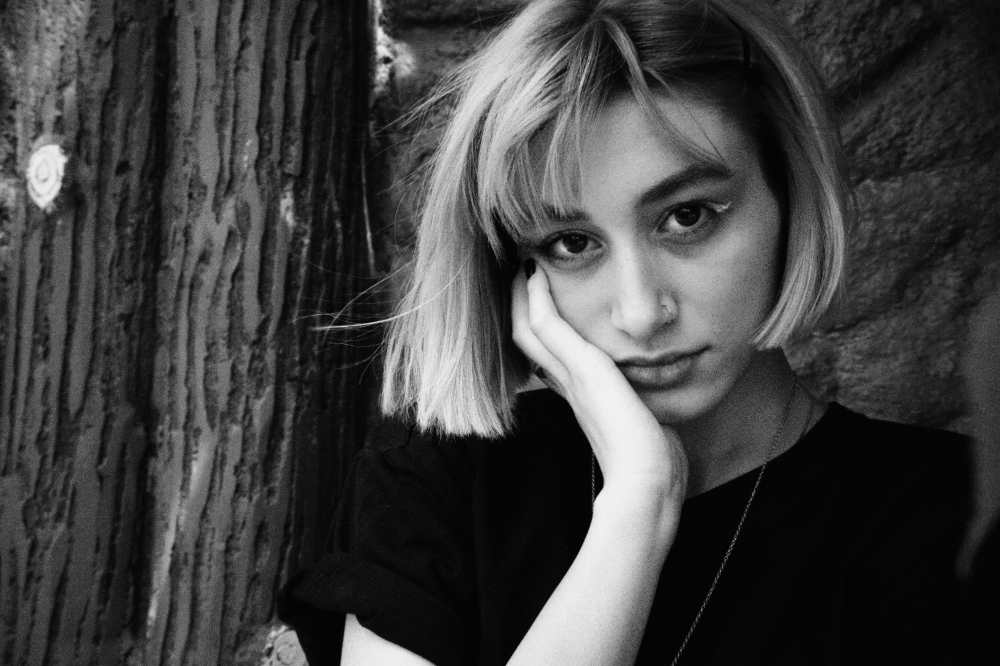

Über mich

Hallo! Ich bin Kimia, aber ihr könnt mich gerne Kim oder Kimi nennen.
Ich liebe es, eigene Charaktere zu erschaffen und zu zeichnen. Oft entstehen dabei auch Geschichten und neue Ideen. Für mich ist Zeichnen nicht nur das Erstellen eines Bildes, sondern das Erschaffen einer kleinen Welt, in der jeder Charakter seine eigene Geschichte und Persönlichkeit hat. Kreativität bedeutet für mich, aus einer einfachen Idee etwas Eigenes und Sichtbares entstehen zu lassen.
Seit meiner Kindheit interessiere ich mich für Zeichnen, Design und Computer. Mein Vater arbeitete mit Computern, und ich beobachtete ihn oft dabei. Schon damals entstand meine Verbindung zwischen Technologie und Kreativität.
In der Schule entschied ich mich für Informatik mit dem Schwerpunkt Internet und Netzwerke. Gleichzeitig blieb das Zeichnen ein wichtiger Teil meines Lebens. Ich lernte vieles selbstständig und widmete mich besonders vor meinem Studium intensiv dem Zeichnen. Anschließend studierte ich IT.
Mein beruflicher Weg führte mich später in die Gastronomie und in die Welt der Cafés. Dort konnte ich viele neue Erfahrungen sammeln, mit unterschiedlichen Menschen arbeiten und lernen, offen auf andere zuzugehen. Auch während dieser Zeit gab ich das Zeichnen nie wirklich auf. Ich zeichnete weiter in meinem Notizbuch und entwickelte eigene Ideen.
Eine Veränderung in meinem Leben brachte mich schließlich dazu, meine Ziele neu zu überdenken. Dabei wurde mir noch bewusster, wie wichtig Kreativität und Gestaltung für mich sind. Ich habe gemerkt, dass ich meine technischen Erfahrungen mit meiner kreativen Seite verbinden möchte.
Heute möchte ich mich im Bereich Mediengestaltung und Webdesign weiterentwickeln. Ich bin neugierig, lerne gerne neue Dinge und probiere verschiedene kreative Möglichkeiten aus. Beim Zeichnen arbeite ich gerne mit viel Liebe zum Detail und nehme mir die Zeit, meine Ideen genau umzusetzen. Durch meine bisherigen Erfahrungen habe ich außerdem gelernt, geduldig zu sein, dranzubleiben und gerne mit unterschiedlichen Menschen zusammenzuarbeiten.
Ich lerne gerne Neues, probiere verschiedene Ideen aus und möchte meine Fähigkeiten im Bereich Mediengestaltung weiterentwickeln.
Dieses Portfolio ist ein Einblick in meine kreative Welt – in meine Ideen, meine Arbeiten und meinen bisherigen Weg.